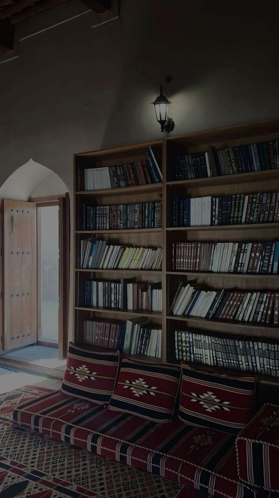

О великих достоинствах Корана
Абу Умама (да будет доволен им Аллах) рассказывал:
«Я слышал, как Посланник Аллаха (мир ему и благословение Аллаха) говорил: “Читайте Коран, ибо,
поистине, в День воскрешения он явится, как заступник за тех, кто его читал!”» Этот хадис передал
Муслим (804).
От ‘Усмана ибн ‘Аффана (да будет доволен им Аллах) сообщается, что Посланник Аллаха (мир ему и
благословение Аллаха) сказал: «Лучшими из вас являются те, кто изучал Коран и обучал ему других».
Этот хадис передал аль-Бухари (5027).
Сообщается, что ‘Абдуллах ибн Мас’уд (да будет доволен им Аллах) сказал: “Кто желает истинного
знания, пусть побеспокоит Коран, ибо поистине, в нем знание первых и последних!”
Это сообщение передал ат-Табарани в “аль-Кабир” (8666). Иснад достоверный.

Хадисы о друзьях и дружбе
Всевышний Аллах также сказал:
«Верующие мужчины и женщины являются помощниками и друзьями друг другу. Они велят совершать
одобряемое и запрещают предосудительное, совершают молитву, выплачивают закят, повинуются Аллаху и
Его посланнику. Аллах смилостивится над ними. Воистину, Аллах – Могущественный, Мудрый» (ат-Тауба 9:
71).
Передают со слов ‘Абдуллаха ибн ‘Умара, да будет доволен Аллах ими обоими, что Посланник Аллаха, да
благословит его Аллах и приветствует, сказал:
«Лучшим товарищем пред Аллахом Всевышним является тот, кто лучше всех (относится) к своему
товарищу[1], а лучшим соседом пред Аллахом Всевышним является тот, кто лучше всех (относится) к
своему соседу». Этот хадис передали Ахмад (2/167), аль-Бухари в «аль-Адабуль-муфрад» (115),
ат-Тирмизи (1944), Ибн Хиббан (518, 519).
Передают со слов Абу Хурайры, да будет доволен им Аллах, о том, что Пророк, да благословит его Аллах
и приветствует, сказал: «Человек исповедует ту же религию, что и его ближайший друг, так пусть же
каждый из вас обращает внимание на то, с кем он водит дружбу». Этот хадис передали Ахмад (2/303),
Абу Дауд (4833), ат-Тирмизи (2378), аль-Хаким (4/171), аль-Байхакъи в «Шу’аб аль-Иман» (9438)
Сообщается, что когда Суфьян ас-Саури прибыл в Басру, он стал спрашивать о положении Раби’а ибн
Сабиха среди людей. Он спросил о нем: «Каков его мазхаб (путь)?» Ему ответили: «Его мазхабом
является только Сунна». Он спросил: «А кто входит в его окружение?» Ему ответили: «Къадариты[2]».
Тогда Суфьян сказал: «Значит он къадарит!» Ибн Батта в «аль-Ибана» (2/453).